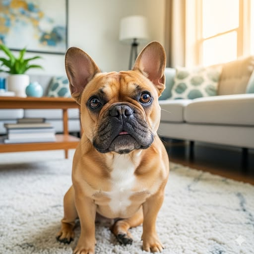
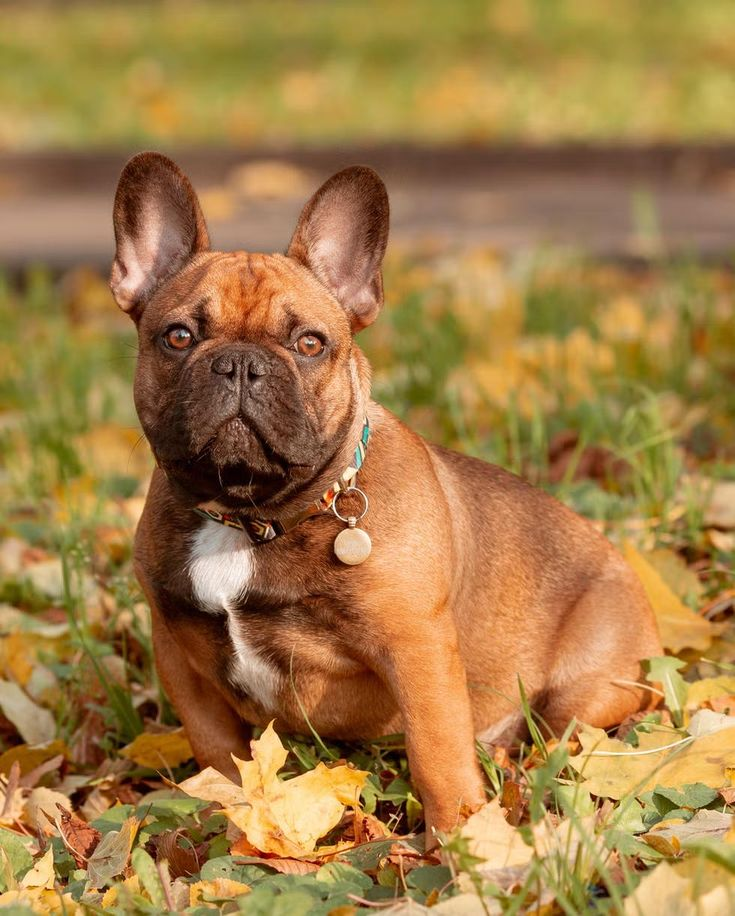
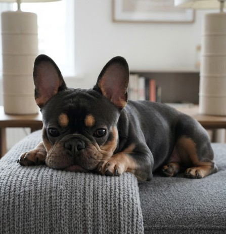

Bouledogue Francese
Il Bouledogue Francese è una delle razze da compagnia più amate e popolari al mondo, celebre per le sue inconfondibili orecchie "da pipistrello" e il musetto schiacciato.
Nonostante l'aspetto muscoloso e compatto, è un cane dal carattere incredibilmente dolce, simpatico e giocherellone. Perfetto per la vita in appartamento, sul divano con la propria famiglia ed è un vero maestro nel regalare sorrisi.
Caratteristiche
Tempo e Routine

Ha bisogno di passeggiate brevi e moderate, senza sforzi eccessivi o temperature estreme.
Cura e Impegno
Richiede pulizia costante delle pieghe facciali, occhi e attenzioni respiratorie.
Valutazione dello spazio
Perfetto per la vita in appartamento, anche di dimensioni ridotte.
Maggiori informazioni
Tempo e Routine
Non ha un'elevata richiesta di esercizio fisico: preferisce brevi passeggiate quotidiane e sessioni di gioco moderate in casa. È fondamentale evitare sforzi intensi o corse prolungate durante le giornate estive e calde.
Cura e Impegno
Il mantello raso richiede poca toelettatura, ma è essenziale igienizzare regolarmente le caratteristiche pieghe della pelle sul muso, curare le orecchie e fare attenzione alla sua particolare conformazione brachicefala.
Valutazione dello spazio
È il classico cane da appartamento per eccellenza: docile, compatto e poco incline ad abbaiare senza motivo, trova la sua dimensione ideale vivendo a stretto contatto con le persone di casa.
Pro e Contro
✓ Per chi è ideale
- Carattere dolce, giocherellone e affettuoso con tutti
- Adattabilità totale alla vita in città e in appartamenti
- Taglia compatta e gestione del pelo molto semplice
▲ Cosa tenere a mente
- Molto sensibile al calore e ai colpi di sole
- Razza brachicefala a rischio di problemi respiratori
- Può essere testardo e richiede un'educazione gentile ma coerente
Momenti ed espressioni



Palette di colori